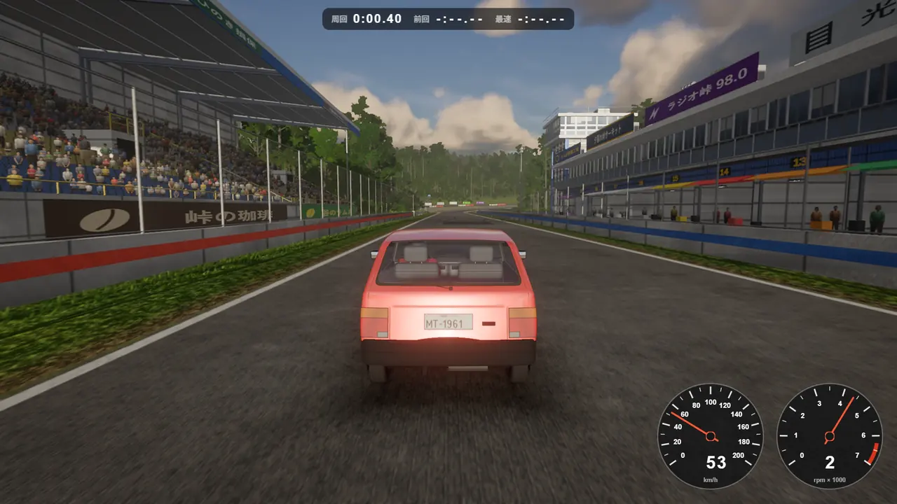

コードだけで作る、野良猫の目線の 30 秒
Python が Blender を動かして描き、音は numpy で合成する。生成 AI を使わずに、地方の住宅街を歩く猫の目線の動画を作れるかを試した。
出来る！の実験レポート
X などで見かけた「AI がここまで作った」という報告を、この PC で実際に試した記録です。新しい順に並べています。
Python が Blender を動かして描き、音は numpy で合成する。生成 AI を使わずに、地方の住宅街を歩く猫の目線の動画を作れるかを試した。

公開されている WebGPU のレースゲームを土台に、作り方のまね・コードの流用・3 つのモデルでのブラッシュアップを試した。遊べる版とソースつき。